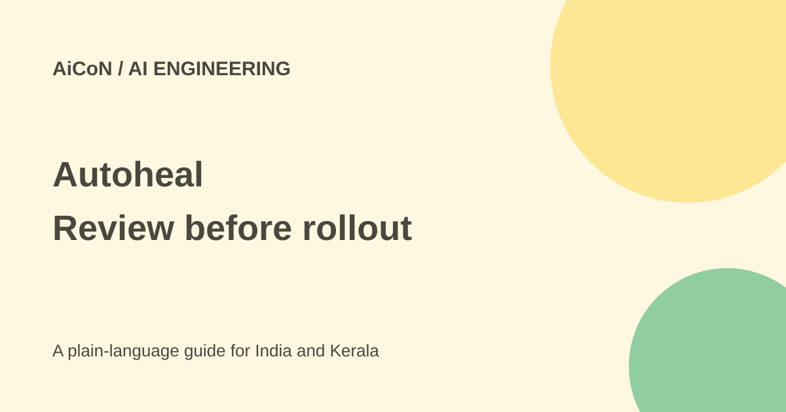

Autoheal: incident agents, review gates and funding explained
Autoheal targets engineering work after code is written, including incidents and security fixes. Its self-improvement claims include review and testing gates, not permission to change production without oversight.

What does Autoheal do?
Autoheal describes its product as a software factory for post-coding work: incident response, alert triage, vulnerability remediation and AI coding cost efficiency. It runs shared cloud-based agents rather than relying only on individual engineers' laptops.
The official documentation says it does not replace developers' existing coding agents. It aims to improve the context and governed workflows around them. The product is aimed at enterprise engineering teams, not a general free consumer chatbot.
What does self-improving mean here?
The documentation separates improvements to an agent's definition from improvements to the context it uses. It says private evaluations score both the path taken and the resulting work. Weak results lead to proposed changes rather than an assumption that every earlier prompt stays correct.
The release says behaviour changes are version-controlled and require engineer approval. The self-improvement documentation describes replaying a change against past runs and testing it in shadow alongside the live agent before rollout. Those gates are central to the claim.
A review loop is not an accuracy guarantee
A test suite can miss important failure cases, and a good score can reflect an incomplete test. Self-improvement should be judged by measured outcomes on the organisation's own tasks, not by how often a system says it learned something.
Keep independent review, representative failures and rollback plans. A proposed cheaper configuration can save tokens while giving worse answers; the right measure includes correctness and the effort needed to fix mistakes.
Incident response and permissions
The docs describe a governance layer for agent definitions, budgets, model selection, identity, roles and approval policy. They also describe a scoped, audited integration gateway and human approval for sensitive tool calls.
For an incident workflow, first distinguish gathering evidence from making a change. Reading logs, proposing a cause, opening a patch, restarting a service and changing a production configuration carry different risks. Access should match the task, not the broad idea of an autonomous engineer.
Access, free status and pricing
The current homepage offers Book a demo and a Login route. The checked public pages did not establish a self-service free tier or a complete public price table. Do not label the enterprise product free merely because its documentation is public.
Ask for a written scope covering platform fees, model usage, integrations, support and data handling. Any trial should also state which systems it may access and whether it can make changes. This research did not request a demo or connect an account.
How to plan a small evaluation
- Pick a narrow incident or remediation task with known success criteria.
- Use approved historical or test-system data first.
- Define the systems and information the agent may read.
- Keep production changes behind an explicit review gate.
- Include wrong alerts and incomplete evidence in the test set.
- Measure correct findings, false alerts, review time and total cost.
- Inspect proposed updates and their test evidence.
- Move toward production only with an owner, rollback and agreed access limits.
Funding and customer claims
The official 28 September 2026 release says Autoheal raised USD 7.9 million in seed funding led by Innovation Endeavors. At the approximate ₹96.43-per-dollar archive reference, that is about ₹76.18 crore, not the older post's roughly ₹70 crore estimate.
The release names Nomura Bank and AvidXchange and includes customer quotations. Those are vendor-published references, not independent evidence that every customer will see the same performance. Funding itself is not proof of product quality or savings.
Security and data terms
The homepage displays ISO 27001, SOC 2 Type II and zero-data-retention claims. This guide has not independently reviewed the audit reports or the contract scope. A badge is not a substitute for checking the exact service, account settings and subprocessors.
Engineering data can contain customer details, credentials and internal architecture. Ask where it is stored, who can inspect it, how it is deleted and whether model providers retain inputs. Separate vendor claims from the controls your organisation actually enables.
India and Kerala context
A local engineering team should compare the product with the incidents it actually has and the people available to review changes. Enterprise tooling may not be proportionate for a small project without production systems or a platform team.
When costs are quoted in dollars, include currency conversion, taxes and model consumption in the budget. Do not use a funding conversion as a product price; this guide does not have a verified subscription figure.
What changed since the original AiCoN post?
This guide adds the documented engineer-approval and shadow-testing gates, separates public docs from free access and updates the INR funding comparison. It treats performance, customer and certification statements as vendor claims unless separately checked.
Frequently asked questions
Does self-improving mean unreviewed production edits?
No. The documented behaviour-change loop includes engineer approval.
Is there a verified free plan?
No free plan was established by the checked public sources.
Does funding prove reliability?
No. Test the actual workflow and outcomes.
Sources: Current homepage · How the product works · Self-improvement review gates · Official funding and customer statements. Checked 7 October 2026.